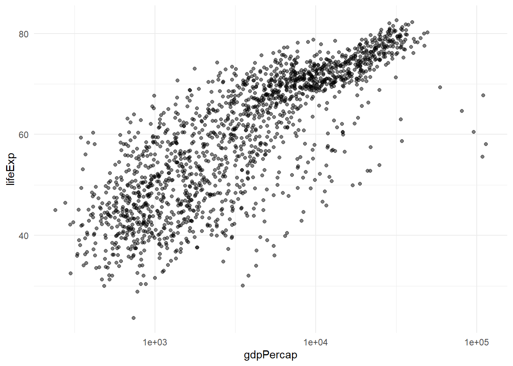

library(tidyverse)
library(gapminder)
library(knitr)
data(
"gapminder",
package = "gapminder"
)
datos_presentacion <- gapminder37 Presentaciones con Quarto
Objetivos de aprendizaje
Al finalizar este capítulo, el lector será capaz de:
- Crear presentaciones reproducibles con Quarto.
- Generar diapositivas HTML mediante RevealJS.
- Integrar tablas, figuras y resultados automáticamente.
- Personalizar temas y diseños visuales.
- Comunicar resultados científicos de forma profesional.
37.1 Introducción
Las presentaciones constituyen uno de los mecanismos más utilizados para comunicar resultados académicos, científicos y profesionales.
Tradicionalmente los resultados obtenidos en R se copian manualmente hacia PowerPoint, generando problemas de reproducibilidad, errores de actualización y duplicación de trabajo.
Quarto permite generar presentaciones completamente reproducibles utilizando una única fuente de información, donde tablas, gráficos y resultados se actualizan automáticamente cada vez que cambian los datos o el análisis (Allaire et al., 2024).
37.2 Configuración inicial
37.2.1 Carga de librerías y datos
37.3 ¿Qué es una presentación Quarto?
Una presentación Quarto es un documento reproducible que combina texto, código, tablas, figuras y resultados en un conjunto de diapositivas HTML.
La tecnología más utilizada para este propósito es RevealJS (Allaire et al., 2024).
37.3.1 Estructura mínima
---
title: "Mi presentación"
format: revealjs
---
# Primera diapositiva
Contenido
# Segunda diapositiva
Contenido37.4 Creación de una presentación básica
37.4.1 Archivo YAML
---
title: "Análisis Exploratorio"
author: "José Vicente Ordóñez"
format:
revealjs:
theme: simple
---La opción revealjs indica que Quarto debe generar una presentación HTML.
37.5 Generación automática de diapositivas
Cada encabezado de primer nivel crea una nueva diapositiva.
37.5.1 Ejemplo
# Introducción
Texto.
# Objetivos
Texto.
# Resultados
Texto.37.6 Incorporación de tablas reproducibles
Las tablas se generan automáticamente a partir de los datos.
datos_presentacion |>
summarise(
Esperanza_vida = mean(lifeExp),
PIB_per_capita = mean(gdpPercap)
) |>
kable(
digits = 2
)| Esperanza_vida | PIB_per_capita |
|---|---|
| 59.47 | 7215.33 |
37.6.1 Interpretación
La tabla se actualizará automáticamente cuando cambien los datos utilizados.
37.6.2 Conclusión práctica
No es necesario copiar tablas manualmente a PowerPoint.
37.7 Incorporación de gráficos reproducibles
ggplot(
datos_presentacion,
aes(
x = gdpPercap,
y = lifeExp
)
) +
geom_point(
alpha = 0.5
) +
scale_x_log10() +
theme_minimal()
37.7.1 Interpretación
La figura se genera automáticamente utilizando los datos originales.
37.7.2 Conclusión práctica
Los gráficos siempre estarán sincronizados con el análisis.
37.8 Selección de temas visuales
RevealJS incorpora varios temas prediseñados.
37.8.1 Configuración
format:
revealjs:
theme: moonTemas disponibles:
- simple
- moon
- night
- league
- serif
- solarized
37.9 Numeración automática
format:
revealjs:
slide-number: true37.9.1 Interpretación
Facilita la navegación durante exposiciones extensas.
37.10 Tabla de contenidos
format:
revealjs:
toc: true37.10.1 Interpretación
Permite acceder rápidamente a cualquier sección de la presentación.
37.11 Transiciones
format:
revealjs:
transition: fadeOpciones disponibles:
- fade
- slide
- zoom
- convex
- concave
37.12 Diseño en columnas
:::: {.columns}
::: {.column width="50%"}
Texto
:::
::: {.column width="50%"}
Gráfico
:::
:::37.12.1 Interpretación
Permite combinar explicaciones y visualizaciones en una misma diapositiva.
37.13 Estructura recomendada para una presentación científica
Portada
↓
Problema
↓
Objetivos
↓
Metodología
↓
Resultados
↓
Discusión
↓
Conclusiones
↓
Preguntas37.14 Comparación entre PowerPoint y Quarto
tibble(
Caracteristica = c(
"Reproducibilidad",
"Automatización",
"Actualización automática",
"Integración con R"
),
PowerPoint = c(
"Limitada",
"No",
"No",
"Parcial"
),
Quarto = c(
"Sí",
"Sí",
"Sí",
"Sí"
)
) |>
kable()| Caracteristica | PowerPoint | Quarto |
|---|---|---|
| Reproducibilidad | Limitada | Sí |
| Automatización | No | Sí |
| Actualización automática | No | Sí |
| Integración con R | Parcial | Sí |
37.14.1 Interpretación
Quarto permite mantener coherencia entre análisis, resultados y presentación.
37.15 Renderización
Desde la terminal:
quarto render presentacion.qmdDesde R:
quarto::quarto_render(
"presentacion.qmd"
)37.16 Lista de verificación
tibble(
Elemento = c(
"YAML configurado",
"Tema seleccionado",
"Tablas reproducibles",
"Gráficos reproducibles",
"Numeración activada",
"Renderización exitosa"
),
Estado = c(
"Sí",
"Sí",
"Sí",
"Sí",
"Sí",
"Sí"
)
) |>
kable()| Elemento | Estado |
|---|---|
| YAML configurado | Sí |
| Tema seleccionado | Sí |
| Tablas reproducibles | Sí |
| Gráficos reproducibles | Sí |
| Numeración activada | Sí |
| Renderización exitosa | Sí |
37.17 Manos a la obra
- Cree un archivo
.qmd. - Configure RevealJS.
- Seleccione un tema.
- Inserte tablas reproducibles.
- Inserte gráficos reproducibles.
- Active numeración.
- Renderice la presentación.
- Verifique el resultado final.
37.18 Resumen del capítulo
En este capítulo se estudió la creación de presentaciones reproducibles con Quarto y RevealJS. Se mostró cómo integrar resultados, tablas y gráficos generados en R dentro de diapositivas HTML profesionales, manteniendo la coherencia y reproducibilidad del análisis.